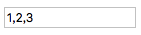
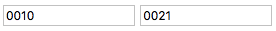
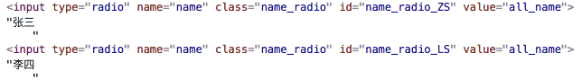
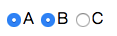
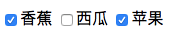
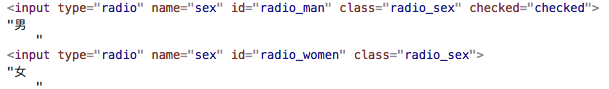
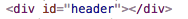
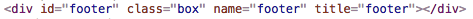

与 class 相关的操作
jQuery.fn.addClass
这个方法可以向当前 jQuery 实例中的所有 DOM 元素添加指定的 class。其中，参数的类型有两种
- 字符串：可提供一个或多个 class（ 多个 class 用空格分开 ）
- 函数：将这个函数的返回值作为 class 添加
addClass: function( value ) {
var classes, elem, cur, clazz, j,
i = 0,
len = this.length,
// 1. 判断参数是否是字符串，如果是的话，将参数保存在 proceed 变量中
proceed = typeof value === "string" && value;
/**
* 2. 判断参数是否是函数
*/
if ( jQuery.isFunction( value ) ) {
/**
* 如果是函数的话，那么首先遍历当前 jQuery 中的所有 DOM 元素
* 遍历过程中，先调用参数函数，并将其作用域设置为当前的 DOM 元素，并传递当前 DOM 元素在 jQuery 实例中的索引和当前 DOM 元素的 class 属性为参数
* 然后将当前 DOM 元素转换为 jQuery 对象并调用 addClass 方法，将参数的返回值作为参数
*/
return this.each(function( j ) {
jQuery( this ).addClass( value.call( this, j, this.className ) );
});
}
/**
* 3. 判断提供的字符串参数是否不为空
*/
if ( proceed ) {
// 3.1 将字符串参数按照空格匹配，保存在一个数组中，并将数组的引用保存在 classes 中
classes = ( value || "" ).match( core_rnotwhite ) || [];
// 3.2 遍历当前 jQuery 对象中的 DOM 元素
for ( ; i < len; i++ ) {
elem = this[ i ];
/**
* 判断当前遍历的是否是元素节点
* 如果是的话，再判断当前元素的 class 是否有内容
* 如果有，则将内容首尾加上空格，并将制表符、回车换行等替换为空格，将结果保存在 cur 中
* 如果没有，则直接将空格字符串赋给 cur
*/
cur = elem.nodeType === 1 && ( elem.className
? ( " " + elem.className + " " ).replace( rclass, " " )
: " "
);
if ( cur ) {
/**
* 遍历 classes 数组
* 查看 cur 中是否有数组中的每个元素
* 如果没有，则将当前元素 + 空格直接拼在 cur 字符串的后面
*/
j = 0;
while ( (clazz = classes[j++]) ) {
if ( cur.indexOf( " " + clazz + " " ) < 0 ) {
cur += clazz + " ";
}
}
// 将 cur 去除首尾空格后的值，直接赋给当前 DOM 元素的 class
elem.className = jQuery.trim( cur );
}
}
}
// 4. 返回当前 jQuery 实例，以供链式调用
return this;
}
示例一：提供字符串参数
<div id="box1" class="box_1"></div>
<div id="box2" class="box_1"></div>
const $divs = $( '.box_1' );
/**
* 此时，提供的字符串参数非空，所以进入 26 行的 if 中，并将参数按照空格匹配，所以 classes 就是 [ "test1", "test2" ]，然后遍历当前的 jQuery 对象中所有的 DOM 元素，将当前 DOM 元素的 class 属性值赋给 cur（ 分别是 "box_1" 和 "box_2" ），然后在每一次遍历过程中，循环 classes 数组
* 如果在 cur 中不存在 classes 中的每个元素，那么就将这个元素加入到 cur 中
* 最后，将 cur 的值去除首尾空格后重新设置为当前 DOM 元素的 class 属性
*/
$divs.addClass( 'test1 test2' );
结果如下
<div id="box1" class="box_1 test1 test2"></div>
<div id="box2" class="box_1 test1 test2"></div>
示例二：提供函数参数
<div class="box_2" id="box3"></div>
<div class="box_2" id="box4"></div>
<div class="box_2" id="box5"></div>
const $divs = $( '.box_2' );
let i = 0;
/**
* 此时，addClass 的参数是函数，所以进入 12 行的 if 中，遍历每一个 DOM 元素，然后调用这个函数参数
* 此时这个函数参数中的作用域就是当前遍历的 DOM 元素（ 此例中分别是 #box3， #box4， #box4 ），并且接受两个参数，第一个参数是当前 DOM 元素的索引（ 此例中分别是0，1，2 ），第二个参数是当前 DOM 元素的 class 属性值（ 此例中分别是 box_2，box_2，box_2 ）
* 然后将当前 DOM 元素转换为 jQuery 元素，再将这个函数的返回值作为 addClass 函数的参数，给当前 DOM 元素设置 class
*/
$divs.addClass(function ( index, className ) {
i++;
return 'add_' + i;
});
结果如下
<div class="box_2 add_1" id="box3"></div>
<div class="box_2 add_2" id="box4"></div>
<div class="box_2 add_3" id="box5"></div>
jQuery.fn.removeClass
该方法用于删除当前 jQuery 示例中所有 DOM 元素指定的 class。其中，该方法的参数类型可以有三种
- 字符串：可提供一个或多个 class（ 多个 class 用空格分开 ）
- 函数：将这个函数的返回值作为要删除的 class
- Undefined：删除所有的 class
removeClass: function( value ) {
var classes, elem, cur, clazz, j,
i = 0,
len = this.length,
/**
* 1. 判断是否传递了参数
* 如果没传递，那么 proceed 就是 true
* 如果传递了，再判断参数是否是字符串，如果是字符串，那么 proceed 就是参数字符串
*/
proceed = arguments.length === 0 || typeof value === "string" && value;
/**
* 2. 判断参数是否是函数
*/
if ( jQuery.isFunction( value ) ) {
return this.each(function( j ) {
jQuery( this ).removeClass( value.call( this, j, this.className ) );
});
}
/**
* 3. 判断 proceed 是否存在
* 只有两种情况会进入 if
* 第一：传入的是非空字符串
* 第二：没有传递任何参数
*/
if ( proceed ) {
// 将字符串参数按照空格分隔，并存在数组 classes 中
classes = ( value || "" ).match( core_rnotwhite ) || [];
// 遍历当前 jQuery 中的 DOM 元素
for ( ; i < len; i++ ) {
elem = this[ i ];
/**
* 判断当前遍历的是否是元素节点
* 如果是的话，再判断当前元素的 class 是否有内容
* 如果有，则将内容首尾加上空格，并将制表符、回车换行等替换为空格，将结果保存在 cur 中
* 如果没有，则直接将空格字符串赋给 cur
*/
cur = elem.nodeType === 1 && ( elem.className ?
( " " + elem.className + " " ).replace( rclass, " " ) :
""
);
if ( cur ) {
/**
* 遍历 classes 数组
* 查看 cur 中是否有数组中的每个元素
* 如果有，则将这个元素从 cur 字符串中删除
*/
j = 0;
while ( (clazz = classes[j++]) ) {
while ( cur.indexOf( " " + clazz + " " ) >= 0 ) {
cur = cur.replace( " " + clazz + " ", " " );
}
}
/**
* 判断是否提供了字符串参数
* 如果有，则将 cur 去除首尾空格后的值赋给当前 DOM 的 class 属性
* 如果没有，则将空字符串赋给当前 DOM 的 class 属性
*/
elem.className = value ? jQuery.trim( cur ) : "";
}
}
}
// 4. 返回当前 jQuery 对象，以供链式调用
return this;
}
示例一：提供字符串参数
<div class="box test1 test2" id="box1"></div>
<div class="box test1 test2" id="box2"></div>
const $divs = $( '.box' );
/**
* 此时，调用 removeClass 时，传递的是字符串参数， 所以进入 28 行的 if 中，并将参数按照空格匹配，并将匹配的结果数组保存在 classes 中（ 此时 classes 就是 [ "test1", "test2" ] ）
* 然后会遍历当前 jQuery 元素中的 DOM 元素，将当前 DOM 元素的 class 赋给 cur 变量（ cur 两次都是 "box test1 test2" ），然后循环 classes 数组，如果 cur 中存在 classes 中的每个元素，那么就将其替换为空字符串
* 最后，将 cur 的值赋给当前 DOM 的 class 属性
*/
$divs.removeClass( 'test1 test2' );
结果如下
<div class="box" id="box1"></div>
<div class="box" id="box2"></div>
示例二：传递函数参数
<div class="box_2" id="box3"></div>
<div class="box_2" id="box4"></div>
const $divs = $( '.box_2' );
// 添加 class
$divs.addClass(function ( index ) {
return 'add_' + (index+1);
});
/**
* 此时，调用 removeClass 时，传递的是函数参数，所以进入 16 行的 if 中，遍历当前所有的 DOM 元素，然后调用参数方法，并将该方法的作用域设置为当前的 DOM 元素，并传递两个参数
* 第一个参数是当前 DOM 元素在当前 jQuery 实例中的索引（ 此例中分别是 0、1 ）
* 第二个参数是当前 DOM 元素的 class 值（ 此例中是 "box_2 add_1" 和 "box_2 add_2" ）
* 然后将当前的 DOM 元素转换为 jQuery 对象，并调用 removeClass 方法，再将函数的返回值作为参数传递
*/
$divs.removeClass(function ( index, className ) {
return 'add_' + (index+1);
});
结果如下
<div class="box_2" id="box3"></div>
<div class="box_2" id="box4"></div>
示例三：不传递任何参数
当不传递任何参数的时候，会将当前 jQuery 实例中所有 DOM 元素的 class 清空
<div class="test1 test2 test3" id="box6"></div>
<div class="test1 test2 test3" id="box7"></div>
const $divs = $( '.test3' );
/**
* 此时，调用 removeClass 时，没有传递任何参数，所以 proceed 变量为 true，classes 变量就是一个空数组
* 然后遍历当前 jQuery 中的 DOM 元素（ 此例中就是 #box6 和 #box7 ）
* 此时将每个 DOM 远元素的 class 属性首尾加上空格，并将其中中制表符、回车符、换行符替换为空格字符串，并将结果保存在 cur 中（ 只要 DOM 元素本身存在 class，那么 cur 就会有值 ）
* 最后直接到 65 行的代码中，因为没有提供参数，所以 value 是 undefined，直接将当前 DOM 元素的 class 设置为空
*/
$divs.removeClass();
结果如下
<div class id="box6"></div>
<div class id="box7"></div>
jQuery.fn.hasClass
该方法用于检测指定的 class 是否存在于当前 jQuery 实例中的 DOM 元素
hasClass: function( selector ) {
// 1. 将参数首尾加上空格并保存在 className 变量中
var className = " " + selector + " ",
i = 0,
l = this.length;
/**
* 2. 遍历当前 jQuery 实例中的 DOM 元素
* 如果当前遍历的是元素节点，那么获取其 class 属性并在首尾加上空格，然后将其中的制表符、回车符、换行符等都替换为空格
* 然后再从替换的结果查找是否存在 className 值
* 如果存在，直接返回 true
* 如果不存在，则进行下一次的遍历
*/
for ( ; i < l; i++ ) {
if ( this[i].nodeType === 1 && (" " + this[i].className + " ").replace(rclass, " ").indexOf( className ) >= 0 ) {
return true;
}
}
// 3. 如果都没有，那么就返回 false
return false;
}
jQuery.fn.toggleClass
该方法用于切换 class，也就是说，如果有，删除，没有则添加。还可以传递不同的参数被当做 addClass 和 removeClass 来使用
toggleClass: function( value, stateVal ) {
var type = typeof value;
/**
* 1. 判断第二个参数是否是布尔值并且第一个参数是否是字符串，满足进入 if
* if 中会判断这个布尔值是 true 还是 false
* 如果是 true，那么直接调用 addClass
* 如果是 false，那么直接调用 removeClass
*/
if ( typeof stateVal === "boolean" && type === "string" ) {
return stateVal ? this.addClass( value ) : this.removeClass( value );
}
/**
* 2. 判断第一个参数是否是函数
*/
if ( jQuery.isFunction( value ) ) {
return this.each(function( i ) {
jQuery( this ).toggleClass( value.call(this, i, this.className, stateVal), stateVal );
});
}
/**
* 3. 处理以上情形之外的情况
* 遍历当前 jQuery 对象中的所有 DOM 元素
*/
return this.each(function() {
/**
* 3.1 处理第一个参数为字符串的情况
*/
if ( type === "string" ) {
var className,
i = 0,
// 3.1.1 将当前 DOM 元素转换为 jQuery 对象
self = jQuery( this ),
// 3.1.2 将字符串参数按照空格匹配，并将结果存在 classNames 数组中
classNames = value.match( core_rnotwhite ) || [];
/**
* 3.1.3 循环 classNames 数组
* 判断 classNsmes 数组中当前元素是否存在于当前 DOM 元素的 class 中
* 如果存在，就将其删除
* 如果不存在，就将其添加
*/
while ( (className = classNames[ i++ ]) ) {
// check each className given, space separated list
if ( self.hasClass( className ) ) {
self.removeClass( className );
} else {
self.addClass( className );
}
}
}
/**
* 3.2 处理没有传递任何参数或者第一个参数为布尔值的情况
*/
else if ( type === core_strundefined || type === "boolean" ) {
if ( this.className ) {
// store className if set
data_priv.set( this, "__className__", this.className );
}
// If the element has a class name or if we're passed "false",
// then remove the whole classname (if there was one, the above saved it).
// Otherwise bring back whatever was previously saved (if anything),
// falling back to the empty string if nothing was stored.
this.className = this.className || value === false
? ""
: data_priv.get( this, "__className__" ) || "";
}
});
}
示例一：传递一个字符串参数
<button class="btn_01">切换</button>
<div id="box_01"></div>
const $div = $( '#box_01' );
const $button = $( '.btn_01' );
$button.on( 'click', function () {
/**
* 此时，调用 toggleClass 方法时，只传递了一个字符串参数，所以直接进入 return 中，遍历当前的 jQuery 对象
* 因为第一个参数是字符串，所以进入 32 行的 if 中
* 在 if 中，将字符串参数按照空格匹配，并将结果数组保存在 classNames 中（ 此例中就是 [ "test_box" ] ）
* 然后循环 classNames 中的所有元素，判断当前元素是否在当前 DOM 元素的 class 中
* 如果有，则将当前元素从当前 DOM 的 class 中删除
* 如果没有，则将当前元素添加到当前 DOM 的 class 中
* 所以，点击按钮奇数此的时候，会向 #box_01 中添加 test_box 的 class，点击偶数此的时候，会向 #box_01 中删除 test_box 的 class
*/
$div.toggleClass( 'test_box' );
});
示例一：传递一个字符串参数 + 一个布尔值参数
当第一个参数为字符串，第二个参数为布尔值的时候，此时就不再是原有的 “切换” 意义了，而是 “强制” 的意义了。
当布尔值为 true 时，代表的就是添加，不管现在有没有相同的 class 都会添加
当布尔值为 false 时，代表的就是删除，不管现在有没有相同的 class 都会删除
<button class="btn_add">添加</button>
<button class="btn_remove">删除</button>
<div id="box_02"></div>
const $div = $( '#box_02' );
const $buttonAdd = $( '.btn_add' );
const $buttonRemove = $( '.btn_remove' );
/**
* 此时调用 toggleClass 方法，传递了一个字符串和布尔值（ true ），所以会进入 11 行的 if 中
* 在 if 中，直接调用 addClass，并将第一个参数作为 addClass 的实参
* 所以，不管怎么点击 “添加” 按钮，都是向 #box_02 中添加 test_box 的 class
*/
$buttonAdd.on( 'click', function () {
$div.toggleClass( 'test_box', true );
});
/**
* 此时调用 toggleClass 方法，传递了一个字符串和布尔值（ false ），所以会进入 11 行的 if 中
* 在 if 中，直接调用 removeClass，并将第一个参数作为 removeClass 的实参
* 所以，不管怎么点击 “删除” 按钮，都是从 #box_02 中删除 test_box 的 class
*/
$buttonRemove.on( 'click', function () {
$div.toggleClass( 'test_box', false );
});
示例三：不传递任何参数
<div id="box_03" class="test1 test2 test3"></div>
<button class="btn_03">点击</button>
const $div = $( '#box_03' );
const $button = $( '.btn_03' );
$button.on( 'click', function () {
/**
* 此时调用 toggleClass 方法没有传递任何参数，所以会进入 59 行的 else if 中
* 当第一次（ 奇数次都一样 ）点击按钮时，当前 DOM 是存在 class 的，所以进入 60 行的 if 中，在私有缓存中为当前 DOM 设置一个键值对，属性为 __className__，值为 DOM 的 class 值
* 然后因为当前 DOM 存在 class，所以在三目中将当前 DOM 的 class 置为空字符串
* 当第二次（ 偶数次都一样 ）点击按钮时，当前 DOM 是不存在 class 的，然后判断提供的参数是否是 false，此例中不是（ 没有任何参数 ）
* 所以会从私有缓存中取出当前 DOM 元素中以 __className__ 为属性的值（ 此例中是 "test1 test2 test3" ），将该值赋给当前 DOM 的 class 属性，所以当前 DOM class 又恢复为之前的值了
*/
$div.toggleClass();
});
示例四：传递一个布尔值
<div id="box_04" class="test1 test2 test3"></div>
<button class="btn_clear">清除</button>
<button class="btn_reset">恢复</button>
const $div = $( '#box_04' );
const $buttonClear = $( '.btn_clear' );
const $buttonReset = $( '.btn_reset' );
/**
* 点击清除按钮时，调用 toggleClass 方法并且传递 false 作为实参，直接进入 59 行的 else if 中
* 因为此时当前 DOM 存在 class，所以会进入 60 行的 if 中，将当前 DOM 的 class 保存在私有缓存中
* 然后，因为此时当前 DOM 存在 class，所以将当前 DOM 的 class 清空
* 当再次点击清除按钮时，因为此时当前 DOM 的 class 为空，所以不会进入 60 行的 if 中，而此时传递的参数也是 false，所以还是会将当前 DOM 的 class 设置为空
*/
$buttonClear.on( 'click', function () {
$div.toggleClass( false );
});
/**
* 点击恢复按钮时（ 基数次 ），调用 toggleClass 方法并且传递 true 作为实参，直接进入 59 行的 else if 中
* 因为此时当前 DOM 存在 class，所以会进入 60 行的 if 中，将当前 DOM 的 class 保存在私有缓存中
* 然后，因为此时当前 DOM 存在 class，所以将当前 DOM 的 class 清空
* 当再次点击恢复按钮时（ 偶数次 ），因为此时当前 DOM 的 class 为空，所以不会进入 60 行的 if 中，而此时传递的参数是 true，所以会将当前 DOM 在私有缓存中，以 __className__ 为属性的值赋给当前 DOM 的 class（ 当前 DOM 的 class 又恢复为 "test1 test2 test3" ）
* 此时和不穿任何参数时的情形一模一样
*/
$buttonReset.on( 'click', function () {
$div.toggleClass( true );
});
示例四：传递一个函数
<div id="box_05" class="test1 test2 test3"></div>
<button class="btn_05">切换</button>
const $div = $( '#box_05' );
const $button = $( '.btn_05' );
/**
* 和 addClass 和 removeClass 一样，该回调的作用域被设置为 jQuery 实例中的每个 DOM 元素
* 并且接受三个参数
* @param { Number } index 当前 DOM 元素在 jQuery 实例中的索引
* @param { String } className 当前 DOM 元素的 class 属性值
* @param { Boolean | Undefiend } stateVal 调用 toggleClass 时传递的第二个参数
*/
function cb ( index, className, stateVal ) {
return 'box_' + index;
}
$button.on( 'click', function () {
/**
* 此时调用 toggleClass 时传递的是一个函数，所以直接进入 18 行的 if 中
* 遍历当前 jQuery 实例中的所有 DOM 元素，没遍历一次执行一次该函数，然后通过当前 DOM 再次调用 toggleClass，并将该函数的返回值作为参数
* 所以该函数的返回值可以是 toggleClass 函数的参数类型中的任意一种
*/
$div.toggleClass( cb );
});
与 input 标签相关的操作
jQuery.fn.val
这个方法用于向 input 元素、select 元素、option 元素设置值或者取值。
如果是设置值，那么会向 jQuery 对象中的每个 DOM 元素设置，如果是取值，那么只会取 jQuery 对象中第一个 DOM 元素的值
/**
* @param { String } value 要设置的值，如果要获取则不用传递参数
*/
val: function( value ) {
var hooks, ret, isFunction,
elem = this[0];
/**
* 1. 判断参数的个数，如果是 0，则代表此时是获取，进入 if
*/
if ( !arguments.length ) {
if ( elem ) {
/**
* 1.1 获取 hooks 对象
* 当 type 为 checkbox 或者 radio，或者是 select 元素、option 元素时会进行兼容的处理，获取 hooks 对象，此时获取的 hooks 对象就是 valHooks
*/
hooks = jQuery.valHooks[ elem.type ] || jQuery.valHooks[ elem.nodeName.toLowerCase() ];
/**
* 1.2 判断是否有兼容处理的结果
* 因为此时是在获取值，所以只需要判断 hooks 对象中是否存在 get 方法
* 如果存在说明有兼容性要处理，兼容性的处理就在 get 方法中
* 如果不存在就没有兼容性问题，直接执行后面的代码
*/
if ( hooks && "get" in hooks && (ret = hooks.get( elem, "value" )) !== undefined ) {
return ret;
}
// 1.3 获取 elem 的 value 值并保存在 ret 中
ret = elem.value;
/**
* 1.4 判断 ret 是否是字符串
* 如果是的话，则将其中的回车符替换为空字符串，并返回
*/
return typeof ret === "string" ?
// handle most common string cases
ret.replace(rreturn, "") :
// handle cases where value is null/undef or number
ret == null ? "" : ret;
}
return;
}
/**
* 2. 判断提供的参数是否是函数
*/
isFunction = jQuery.isFunction( value );
/**
* 3. 处理是设置值的情况，遍历当前 jQuery 对象中的每个 DOM 元素
*/
return this.each(function( i ) {
var val;
// 3.1 如果当前遍历的不是一个元素，那么直接退出方法
if ( this.nodeType !== 1 ) {
return;
}
/**
* 3.2 处理参数为函数的情况
* 如果是函数，则执行这个函数，将结果保存在 val 变量中，将这个函数的作用域设置为当前的 DOM 元素，并传递两个参数
* 参数一：当前 DOM 元素在 jQuery 对象中的索引
* 参数二：当前 DOM 元素的 value 属性值
*/
if ( isFunction ) {
val = value.call( this, i, jQuery( this ).val() );
}
/**
* 3.3 处理参数不是函数，即字符串或者数组的情况，直接将其赋值给 val 变量
*/
else {
val = value;
}
/**
* 3.4 如果 val 的值为 null 或 undefined，则将其重新设置为空字符串
* 只有两种情况才会进入这个 if
* 情况一：调用该方法时显示传递 undefined 或者 null
* 情况二：调用该方法时传递了一个函数，且这个函数没有返回值或者返回 undefined 或 null
*/
if ( val == null ) {
val = "";
}
/**
* 3.5 如果 val 的值为数值，那么将其转换为字符串的形式
* 只有两种情况才会进入这个 else if
* 情况一：调用该方法时传递数值
* 情况二：调用该方法时传递了一个函数，且这个函数返回值是数值
*/
else if ( typeof val === "number" ) {
val += "";
}
/**
* 3.6 如果 val 为数组，那么将数组中的每个元素转换为字符串的形式，并将结果数组重新保存在 val 中
* 只有两种情况才会进入这个 else if
* 情况一：调用该方法时传递数组
* 情况二：调用该方法时传递了一个函数，且这个函数返回值是数组
*/
else if ( jQuery.isArray( val ) ) {
val = jQuery.map(val, function ( value ) {
return value == null ? "" : value + "";
});
}
/**
* 3.7 获取 hooks 对象
* 当 type 为 checkbox 或者 radio，或者是 select 元素、option 元素时会进行兼容的处理，获取 hooks 对象，此时获取的 hooks 对象就是 valHooks
*/
hooks = jQuery.valHooks[ this.type ] || jQuery.valHooks[ this.nodeName.toLowerCase() ];
/**
* 3.8 判断是否有兼容处理的结果
* 因为此时是在设置值，所以只需要判断 hooks 对象中是否存在 set 方法
* 如果存在说明有兼容性要处理，兼容性的处理就在 set 方法中
* 如果不存在就没有兼容性问题，直接执行后面的代码
*/
if ( !hooks || !("set" in hooks) || hooks.set( this, val, "value" ) === undefined ) {
this.value = val;
}
});
}
普通 input 类型，即 type 不为 radio、checkbox
这种类型的 input 是不存在任何兼容性问题的，所以 hooks 对象都是 undedined
示例一：input text 不提供任何参数
<input type="text" id="input_01" value="123" />
const $input = $( '#input_01' );
/**
* 此时调用 val 方法时，因为没有传递参数，所以进入 12 行的 if 中
* 此时，elem 就是 #input_01 元素，然后获取 hooks 对象，此时 type 为 text，标签名为 input，所以 hooks 对象就是 undefined，即不存在任何兼容性的问题，所以不会进入 26 行的 if 中
* 然后获取 elem 的 value 属性（ 是字符串 123 ）并保存在 ret 变量中，最后将其返回
* 所以获取到 #input_01 的值为 123
*/
const value = $input.val(); // 123
示例二：input text 提供一个字符串参数
<input type="text" id="input_02" value="123" />
const $input = $( '#input_02' );
/**
* 此时，调用 val 方法传递了一个字符串参数，所以进入 55 行的 return 中，遍历当前 jQuery 对象中的所有 DOM 元素
* 将参数 value 保存在变量 val 中，然后对 val 进行判断（ 此例中是字符串 456 ），所以不会进入 85 —— 107 的任何 if 中，然后获取 hooks 对象，获取到的还是 undefiend，即还是不存在任何兼容性的问题，所以进入 121 行的 if 中
* 为当前 DOM 元素设置 value 属性为 val 的值
* 所以 #input_02 显示为 456
*/
const value = $input.val( '456' );
示例三：input text 提供一个数组参数
<input type="text" id="input_03" value="000" />
const $input = $( '#input_03' );
/**
* 此时调用 val 方法传递的是一个数组，调用过程和示例二一样，唯一不同的就是此时会进入 103 行 else if 中，将数组中的所有元素转换为字符串，并将转换后的数组重新存入 val 变量中，最后赋给当前元素的 value 属性
* 注意，此时将每个元素转换为字符串的话，如果元素是引用类型，那么会调用其构造函数下的的 toString 方法转换为字符串的形式
* 注意，此时 val 还是一个数组，将其赋给 value 属性时会将数组隐式的转换为字符串（ 即调用 Array.prototype.toString 方法 ）
*/
const value = $input.val( [ 1, 2, 3 ] ); // 123
结果如下

示例四：input text 提供一个函数参数
<input type="text" id="input_04" value="001" />
<input type="text" id="input_05" value="002" />
const $input = $( '#input_04, #input_05' );
/**
* @param { Number } index DOM 元素的索引
* @param { String } value DOM 元素本身的 value 值
*/
function test ( index, value ) {
return value + index;
}
/**
* 此时调用 val 时传递的是一个函数，因为提供了参数，所以会进入 49 行的 return 中，遍历每一个 DOM 元素
* 因为参数是函数，所以 isFunction 为 true，进入 69 行的 if 中，执行这个函数，并将这个函数的作用域设置为当前的 DOM 元素（ 即 test 方法中，作用域分别指向 #input_04 和 #input_05 ），并传递两个参数
* 参数一：当前 DOM 元素在 jQuery 对象中的索引
* 参数二：当前 DOM 元素本身的 value 值
* 调用完成后，将结果保存在 val 变量中，然后对其进行进一步的处理，此例中既不是 undefined 和 null，也不数值或数组，所以不做任何处理
* 然后获取 hooks 对象，此时是 undefined，所以不存在兼容性问题，最后直接将 val 的值赋给当前 DOM 元素的 value 属性
*/
const value = $input.val( test );
结果如下

input type 为 radio
先来看 input 的 type 为 radio 或者 checkbox 是如何解决兼容性问题的
// 向 valHooks 中添加 radio 和 checkbox 的兼容性处理
jQuery.each([ "radio", "checkbox" ], function() {
jQuery.valHooks[ this ] = {
/**
* radio 和 checkbox 在 valHooks 中的 set 方法
* @param { Element } elem 操作的 DOM 元素
* @param { Any } elem 设置的值，该值只有是数组的情况下才有效
* @return { Boolean } 操作的 DOM 元素是否被选中的布尔值
*/
set: function( elem, value ) {
/**
* 判断提供的值是否是数组
* 如果不是的话，则直接退出函数
* 如果是的话，判断当前操作的 DOM 元素的 value 值是否存在于这个数组中
* 如果存在，则将当前 DOM 元素的 checked 属性设置为 true，即被选中
* 如果不存在，则将当前 DOM 元素的 checked 属性设置为 false，即未被选中
*/
if ( jQuery.isArray( value ) ) {
return ( elem.checked = jQuery.inArray( jQuery(elem).val(), value ) >= 0 );
}
}
};
/**
* 判断 radio 和 checkbox 的默认值（ value 属性值 ）是否是空字符串，只有在老版本的 webkit 浏览器中，其默认值是 空字符串，其他浏览器都是 "on"
* 如果当前是老版本的 webkit 浏览器，进入 if
*/
if ( !jQuery.support.checkOn ) {
/**
* radio 和 checkbox 在 valHooks 中的 get 方法（ 只在老版本的 webkit 中存在 ）
* @param { Element } elem 操作的 DOM 元素
* @return { String } DOM 元素本身的 value 属性值，如果没有则是字符串 on
*/
jQuery.valHooks[ this ].get = function( elem ) {
/**
* 判断此时 DOM 元素是否提供了 value 属性
* 如果没有提供，则返回字符串 on，兼容其他浏览器都返回字符串 on
* 如果提供了，则返回提供的属性值
*/
return elem.getAttribute("value") === null
? "on"
: elem.value;
};
}
});
示例一：input radio 不提供任何参数
<input type="radio" name="sex" class="sex_radio" id="sex_radio_man" value="男" checked />男生
<input type="radio" name="sex" class="sex_radio" id="sex_radio_woman" value="女" />女生
<input type="radio" name="sex" class="sex_radio" id="sex_radio_noknow" />不知道
const $radioMan = $( '#sex_radio_man' );
const $radioWoman = $( '#sex_radio_woman' );
const $radioNoknow = $( '#sex_radio_noknow' );
/**
* 下面调用 val 方法中，都没有传递参数，所以会 12 行的 if 中
* 然后获取 hooks 对象，此时 input 的 type 为 radio，所以 hooks 对象就是 valHooks 中的 radio 对象，然后进行兼容性的处理
* 这里要按照浏览器分两种情况
* 情况一：老的 webkit 浏览器：此时 hooks 中是存在 get 属性的
* 此时就会调用其中的 get 方法，获取到当前 DOM 元素的 value 属性值（ 如果没有提供就是字符串 on ）
* 情况二：非老的 webkit 浏览器：此时 hooks 中是不存在 get 属性的
* 所以不会进入 26 行的 if 中
* 然后获取到第一个元素的 value 值（ 此例中分别是 "男"、"女"、"on" ）并赋给 ret 变量，然后将 ret 中的回车符替换为空字符串，并返回
*
* 所以，调用 val 方法，任何版本的浏览器下，没有 value 值的单选框，其默认值为 on
*/
$radioMan.val(); // 男
$radioWoman.val(); // 女
$radioNoknow.val(); // on
示例二：input radio 提供字符串参数
<input type="radio" name="name" class="name_radio" id="name_radio_ZS" value="zs" />张三
<input type="radio" name="name" class="name_radio" id="name_radio_LS" value="ls" />李四
const $radioName = $( '.name_radio' );
/**
* 此时调用 val 时传递的是一个字符串参数，所以会进入 55 行的 return 中，遍历每一个 DOM 元素
* 将参数保存在 val 变量中，然后获取 hooks 对象，此时获取到的是 valHooks 中 radio 的对象
* 然后会执行 hooks 中的 set 方法，因为参数是字符串，所以在 set 方法中什么也不做，返回了 undefined，进入 121 行的 if 中，将参数赋给当前元素的 value 属性
* 所以，#name_radio_ZS 和 #name_radio_LS 的 value 值最终都是 all_name
*/
$radioName.val( 'all_name' );
结果如下

示例三：input radio 提供数组参数
<input type="radio" name="single1" class="single_radio" id="single_radio_A" value="a" />A
<input type="radio" name="single2" class="single_radio" id="single_radio_B" value="b" />B
<input type="radio" name="single3" class="single_radio" id="single_radio_C" value="c" />C
const $radioSingle = $( '.single_radio' );
/**
* 此时，调用 val 方法传递了一个数组，所以进入 55 行的 return 中，遍历每一个 DOM 元素
* 直接将数组的引用保存在 val 变量中，然后进入 103 行的 if 中，将数组中的每个元素转为字符串的形式，重新保存在 val 变量中
* 然后获取 hooks 对象，此时获取到的是 valHooks 中的 radio 对象，然后会调用其中的 set 方法
* 在调用 set 方法中，因为参数是一个数组，所以会进入 if 中，判断此时 DOM 元素的 value 属性值是否存在于这个数组中（ 此时 DOM 元素的 value 属性值分别是 'a'、'b' 和 'c' ）
* 如果存在的话，那么就将该元素的 checked 设置为 true，即被选中，所以只有前两个 radio 被选中
* 所以本例中，#single_radio_A 和 #single_radio_B 会被选中，而 #single_radio_C 则不会
*/
$radioSingle.val( ['a', 'b'] );
结果如下

注意，这个例子中之所以前两个单选框能同时被选中是因为每个单选框的 name 值都是不同的，如果相同，那么只会选中最后的那个单选框了。
示例四：input checkbox 提供数组参数
<input type="checkbox" name="foods" class="checkbox_foods" id="food_banana" value="food_banana" >香蕉
<input type="checkbox" name="foods" class="checkbox_foods" id="food_watermelon" value="food_watermelon" >西瓜
<input type="checkbox" name="foods" class="checkbox_foods" id="food_apple" value="food_apple" >苹果
const $checkboxFoods = $( '.checkbox_foods' );
/**
* 此时调用 val 方法和示例三的过程一模一样，此时 input 是复选框，所以不需要再设置不同的 name 属性
*/
$checkboxFoods.val( [ 'food_banana', 'food_apple' ] );
结果如下

与 option 元素相关的操作
首先来看与 option 元素有关的钩子
与 select 元素相关的操作
首先来看与 select 元素有关的钩子
与属性相关的操作
使用 attr 方法
这个方法用于向当前 jQuery 对象中的 DOM 元素添加属性，其实就是调用了原生的 setAttribute 方法来添加的
与 attr 有关的钩子有如下几个
attrHooks
这个钩子只检测一种情况，就是为 DOM 元素设置 type 属性时，会触发这个钩子。但其实真正发挥作用的只有为 input 标签设置 type 为 radio 时才会触发，因为在这种情况下，会存在一定的兼容性，所以要进一步的处理。
attrHooks: {
type: {
/**
* @param { Element } elem 操作的 DOM 元素
* @param { String } value 设置的属性值
* @return { String } 返回设置的属性值 value
*/
set: function( elem, value ) {
/**
* 1. 首先判断是否存在兼容性（ 根据 jQuery.support.radioValue 的值，这个值代表的是一个 type 为 text 的 input 输入框，在对其设置一个 value 属性后，再将其 type 设置为单选框，即 radio，此时，这个 input 的 value 值是否是原来设置过的值，在 IE 下，其值为 on（ 此值为 false ），在非 IE 下，其值还是原来的值（ 此值为 true ） ）
* 如果存在兼容性，即处于 IE 下，则再判断此时要设置的属性值是否是 radio 并且要设置的元素标签是否是 input 标签，如果都满足，则进入 if
*/
if ( !jQuery.support.radioValue && value === "radio" && jQuery.nodeName(elem, "input") ) {
/**
* 首先将此时 input 的 value 值保存下来，如果在设置 input 的 type 为 radio 之前，input 已经存在了 value 值，那么就将其值保存在 val 变量中
* 然后通过 setAttribute 方法将 input 的 type 改为 radio
* 然后再判断修改 input 的 type 之前是否存在 value 值
* 如果之前存在，则将此时 input 的 value 设置为之前的 value 值，改变了 IE 下 value 为 on 的情况
* 如果之前不存在，则不进行操作
*/
var val = elem.value;
elem.setAttribute( "type", value );
if ( val ) {
elem.value = val;
}
// 返回 value 值，也就是字符串 radio
return value;
}
}
}
}
boolHook
这个钩子主要检测的是一些添加即用的属性，也就是没有属性值的属性。例如 checked、required、readonly 等，这些属性添加就起作用，是否设置值也不会影响属性本身的作用。因为本身不具有值，所以在 jQuery 中将这些属性的值设置为了和属性名相同的字符串。
通过 attr 方法设置以下 16 个属性会触发这个钩子，形式就是类似于：属性名="属性名"
| checked | selected | async | autofocus |
| autoplay | controls | defer | disabled |
| hidden | ismap | loop | multiple |
| open | readonly | required | scoped |
boolHook = {
/**
* @param { Element } elem 操作的 DOM 元素
* @param { Boolean } value 属性值，是一个布尔值
* @param { String } name 属性名
* @return { String } 返回属性名 name
*/
set: function( elem, value, name ) {
/**
* 判断属性值是 false 还是 true
* 如果是 false，则调用 $.removeAttr 方法，将该属性移除
* 如果是 true，则通过原生方法 setAttribute 为 DOM 元素设置该属性，且属性值和属性名相同
*/
if ( value === false ) {
jQuery.removeAttr( elem, name );
} else {
elem.setAttribute( name, name );
}
// 返回属性名
return name;
}
}
nodeHook
这个钩子其实只是一个值为 undefined 的变量，不具备任何的作用。
在调用 attr 方法中，以上三种钩子，分别对应三中情况
input的type为radio（ 触发attrHook）- 设置上述的 16 个属性（ 触发
bookHooks） - 除了以上两种以外的所有属性（ 触发
nodeHook）
jQuery.fn.attr
这个方法很简单，内部只是调用了工具方法 jQuery.access
/**
* @param { String | Object } name 当为 String 时是要设置一个属性的属性名；当为 Object 时是要设置的多个属性的键值对
* @param { String } value 要设置一个属性时的属性值
* @return { jQuery } 当前的 jQuery 对象
*/
attr: function( name, value ) {
/**
* 调用 jQuery.access 方法，并传递五个参数
* 参数一：当前 jQuery 对象
* 参数二：jQuery.attr 方法，这个方法在 access 中会被执行
* 参数三：设置一个属性的属性名或者多个属性的键值对集合
* 参数四：设置一个属性的属性值
* 参数五：参数个数是否大于 1 的布尔值
*/
return jQuery.access( this, jQuery.attr, name, value, arguments.length > 1 );
}
在 access 内部，总是会调用 jQuery.attr 方法，这个方法是最关键的，所以接下来看这个方法具体做了什么
jQuery.attr
/**
* @param { Element } elem 要设置属性的 DOM 元素
* @param { String } name 要设置的属性名
* @param { String } value 要设置的属性值
*/
attr: function( elem, name, value ) {
var hooks, ret,
nType = elem.nodeType; // 保存节点的类型
/**
* 1. 首先判断 elem 是否存在
* 如果存在，则再判断其是否是属性节点、文本节点、注释节点，如果是其中的一种，直接退出
* 因为在这三种节点上是无法设置/获取属性的
*/
if ( !elem || nType === 3 || nType === 8 || nType === 2 ) {
return;
}
/**
* 2. 判断 elem 节点是否存在 getAttribute 方法，如果不存在，则调用 jQuery.prop 方法来实现
* 像 document 这样的节点就不存在这个方法，所以此时就要通过 jQuery.prop 来方法给 document 添加属性
*/
if ( typeof elem.getAttribute === core_strundefined ) {
return jQuery.prop( elem, name, value );
}
/**
* 3. 判断 elem 是否是 HTML 元素，而不是 XML 元素；如果满足，进入 if
* 这一步主要是根据设置的属性来获取不同的 hooks 对象
*/
if ( nType !== 1 || !jQuery.isXMLDoc( elem ) ) {
/**
* 将需要添加的属性名称转小写，并根据 name 来获取不同的钩子对象
* 如果添加的是 type 属性，那么获取的 hooks 就是 attrHook 对象
* 如果添加的是上面 16 种中的一种属性，那么获取的 hooks 就是 boolHook 对象（ 通过 jQuery.expr.match.bool 正则来检验是否是上述的 16 种情况之一 ）
* 除此之外，获得的 hooks 都是 nodeHook 对象（ nodeHook 就是 undefined ）
*/
name = name.toLowerCase();
hooks = jQuery.attrHooks[ name ] ||
( jQuery.expr.match.bool.test( name ) ? boolHook : nodeHook );
}
/**
* 4. 判断是否有要添加属性的值，如果提供属性值不是 undefined，则意味着要对属性处理，进入 if
*/
if ( value !== undefined ) {
/**
* 4.1 如果属性的值为 null，则调用 jQuery.removeAttr 方法将该属性删除
*/
if ( value === null ) {
jQuery.removeAttr( elem, name );
}
/**
* 4.2 判断 hooks 对象是否存在
* 只有当设置的属性是 type 或者上面 16 种之一时，hooks 对象才存在，剩余的属性 hooks 对象都是 undefined
* 如果 hooks 对象存在，则再判断其中是否有 set 属性，boolHook 和 attrHook 中都存在 set 方法，所以进一步会调用 set 方法，并将要设置的 DOM 元素、属性名和属性值作为参数传递，并判断 set 的返回值是否是 undefined
* 如果不是 undefined，则直接返回这个值
*/
else if ( hooks && "set" in hooks && (ret = hooks.set( elem, value, name )) !== undefined ) {
return ret;
}
/**
* 4.3 处理前两种情况之外的情况，例如设置 class，id 等属性的时候会走这个 else
* 直接通过原生方法 setAttribute 为 DOM 元素添加属性
*/
else {
elem.setAttribute( name, value + "" );
return value;
}
} else if ( hooks && "get" in hooks && (ret = hooks.get( elem, name )) !== null ) {
return ret;
} else {
ret = jQuery.find.attr( elem, name );
// Non-existent attributes return null, we normalize to undefined
return ret == null ?
undefined :
ret;
}
}
示例一：设置一个常规属性
常规属性就是除了 type 和上述 16 种属性之外的所有属性，包括 class、id 等
<box id="box_01"></box>
const $box_01 = $( '#box_01' );
/**
* 此时，调用 attr 方法时，内部调用的是 $.access 方法，并传递五个参数：当前 jQuery 对象, jQuery.attr, 'class', 'box', true
* 在 access 方法中，key 值是一个字符串，所以 bulk 是 false，并且 value 不是 undefined，所以会进入 42 行的 else if 中，并且传入的 value 不是函数，所以将 raw 设置为 true，因为 bulk 是 false，所以不会进入 58 行的 if 中，直接进入 86 行的 if 中
* 遍历第一个参数 jQuery 对象中的所有 DOM 元素，每遍历一次就调用第二个参数方法（ 就是 jQuery.attr ），并传递三个参数：当前的 DOM 元素（ 此例中是 #box_01 元素 ），key（ 此例中是 'class' ） 和 value（ 此例中是 'box' ）
* 在遍历完成之后，进入 return，因为此时 chainable 的值为 true，所以直接返回第一个参数的引用，即调用 access 方法的 jQuery 对象（ 此例中就是 $box_01 ）
* 在 jQuery.attr 方法中，因为 DOM 元素不是一个 XML 的元素，所以会进入 32 行的 if 中来获取 hooks 对象，但此时添加的属性时 class，所以 hooks 对象就是 nodeHooks（ 也就是 undefined ）
* 因为 value 值是存在的而不是 undefined，所以进入 47 行的 if 中，而 value 又不是 null，并且 hooks 对象不存在，所以会进入 67 行的 else 中，直接调用 setAttribute 方法为 DOM 元素添加 class="box" 的属性，并返回 value，即 box
*/
$box_01.attr( 'class', 'box' );
结果如下
示例二：为 input 设置 type 属性
先来看看不使用 jQuery 会出现什么样的问题
const $input = document.createElement( 'input' );
document.body.appendChild( $input );
$input.value = '123';
$input.type = 'radio';
console.log( $input.value ); // 非 ie: 123 ie: on
上面的代码，在 IE 下会打印出字符串 on，而在非 IE 下会打印字符串 123。这也就是 jQuery.support.radioValue 检测的兼容性问题，所以在 IE 下，该值就是 false，非 IE 下该值就是 true
现在来使用 jQuery 来解决这一问题
const $input = document.createElement( 'input' );
document.body.appendChild( $input );
$input.value = '123';
/**
* 此时，调用 attr 实例方法时，内部还是调用 jQuery.access 方法，access 方法的执行过程与返回值和示例一是一样的，只看调用 jQuery.attr 方法时都做了什么
* 执行 jQuery.attr 方法时，接受三个参数，分别是 $input、'type'、'radio'。因为第一个参数 $input 不是一个 XML 节点，所以进入 32 行的 if 中获取 hooks 对象，此时设置的属性是 type，所以 hooks 对象就是 attrHooks 中的 type 对象。
* 又因为 value 存在且不是 undefined，所以会进入 47 行的 if 中，在 if 中，value 不是 null，而 hooks 是存在的且其中含有 set 方法，所以会调用其中 set 方法，并传递三个参数：$input、'radio'、'type'
* 在 attrHooks 的 set 方法中，首先判断 jQuery.support.radioValue 的值，只有在 IE 下才会进入 if
* 在 if 中，首先获取 input 的 value 值（ 此例中是 '123' ），然后通过原生方法 setAttribute 为 input 设置 type="radio"，再将此时的 input 的 value 值设置为 '123'，从而解决兼容，最后返回 value，也就是 'radio'
* 调用完 set 的之后，判断其返回值是否是 undefined（ 此时是 'radio' ），如果不是，则进入 60 行的 if 中，直接返回 set 的返回值
*/
$($input).attr( 'type', 'radio' );
console.log( $input.value ); // 123
使用 jQuery 的 attr 实例方法，可以解决之前的问题，示例二不管在什么浏览器下，都会得到字符串 123
示例三：设置 16 种属性之一
<input type="radio" name="sex" id="radio_man" class="radio_sex" />男
<input type="radio" name="sex" id="radio_women" class="radio_sex" checked />女
注意的是，此时男单选框没有被默认选中，而女单选框是被默认选中的，现在通过 jQuery 的 attr 实例方法让它们互换
const $radioMan = $( '#radio_man' );
/**
* 此时调用 attr 方法时，内部先调用 $.access 方法，调用 access 方法的过程与返回值和示例一是一模一样的，所以直接看 jQuery.attr 方法内部，此时 jQuery.attr 方法接受三个参数：#radio_man DOM 元素，'checked' 和 true
* 在 jQuery.attr 方法中，因为第一个参数 #radio_man 不是一个 XML 元素，所以会进入 32 行的 if 来获取 hooks 对象，因为此时的 name 是 'checked'，所以获取的 hooks 对象是 boolHook
* 然后 value 不是 undefined，所以会进入 47 行的 if 中，在 if 中，value 不是 null，且存在 hooks 对象，并且其中含有 set 方法，所以会调用 set 方法，并传递三个参数，#radio_man, true, 'checked'
* 在 boolHook 的 set 方法中，判断 value 是否是 false，此例中不是，所以会进入 else 中，通过原生方法 setAttribute 为 #radio_man 元素设置属性 checked="checked"，之后返回 name 变量，也就是 checked
* 在调用完 set 方法之后判断其返回值是否是 undefined，此例中不是，所以j进入 60 行的 if 中，直接返回 set 的返回值，即 checked
*/
$radioMan.attr( 'checked', true );
const $radioWomen = $( '#radio_women' );
/**
* 此时调用 attr 方法和上面是一样的，唯一不同的是 boolHook 的 set 方法中执行的内容不同
* 在 boolHook 的 set 方法中，接受三个参数：#radio_women、false、'checked'。此时 value 是 false，所以会进入 if 中，调用 jQuery.removeAttr 方法将 checked 属性移除
* 先不用考虑 jQuery.removeAttr 方法具体做了什么，只需要知道它可以将一个指定的属性从 DOM 元素上移除就可以了
* 所以，#radio_women 上的 checked 属性就没有了
*/
$radioWomen.attr( 'checked', false );
结果如下

示例四：设置属性值为 null
<div class="box" id="header"></div>
const $header = $( '#header' );
/**
* 此时调用 attr 方法时，内部先调用 $.access 方法，调用的过程和返回值和示例一一样，直接看调用 jQuery.attr 方法
* 在 jQuery.attr 方法中，首先进入 32 行的 if 中获取 hooks 对象，此例中获取到的是 nodeHook 对象（ 不过此例中用不到 hooks 对象，获取哪一个 hooks 对象都没有关系 ）
* 然后因为 value 值不是 undefined，所以进入 47 行的 if 中，因为 value 是 null，所以会进入 51 行的 if 中，直接调用 jQeury.removeAttr 方法，将当前 DOM 元素的 class 属性移除；目前只需要知道这个方法的作用就可以，具体实现的细节之后再看
*/
$header.attr( 'class', null );
结果如下

示例四：设置多个属性值
<div id="footer"></div>
const $footer = $( '#footer' );
/**
* 此时调用 attr 方法时，内部调用 jQuery.access 时，和前面有所不同
* 在 jQuery.access 方法中，参数 key 是一个对象，所以会进入第 24 行的 if 中，首先将 chainable 设置为 true，代表此时是设置值，然后遍历 key 保存的对象，每遍历一次调用一次 jQuery.access 方法，并传递五个参数：当前的 jQuery 对象（ 此例中是 $footer ），jQuery.attr 方法，key 对象中的每个属性（ 此例中分别是 class、name、title ），该属性对应的属性值（ 此例中分别是 box、footer、foot ），以及布尔值 true
* 在每次循环调用 jQuery.access 中，key 分别是 class、name、title，value 分别是 box、footer、foot，之后的过程和示例一就一样了，最后都会遍历当前 jQuery 对象来调用 jQuery.attr 方法
* 遍历完 key 对象之后，就会进入到 access 中的 return 中，因为此时 chainable 是 true，所以直接返回当前的 jQuery 对象（ 即 $footer ）
*/
$footer.attr({
class: 'box',
name: 'footer',
title: 'foot'
});
结果如下

jQuery.fn.removeAttr
/**
* @param { String } name 要删除的属性名
*/
removeAttr: function( name ) {
/**
* 遍历当前 jQuery 对象中的所有 DOM 元素，为每一个 DOM 元素执行一次 jQuery.removeAttr 方法
* 将当前的 DOM 元素和参数 name 作为参数传递
*/
return this.each(function() {
jQuery.removeAttr( this, name );
});
}
jQuery.removeAttr
/**
* @param { Element } elem 删除属性的 DOM 元素
* @param { String } value 删除属性的属性名，如果有多个以空格分开
*/
removeAttr: function( elem, value ) {
var name, propName,
i = 0,
// 1. 将参数 value 按照空格匹配，将匹配到的结果数组保存在 attrNames 中
attrNames = value && value.match( core_rnotwhite );
/**
* 判断是否有匹配结果，并且 elem 是元素节点
*/
if ( attrNames && elem.nodeType === 1 ) {
/**
* 遍历 attrNames 数组
* 调用原生方法 removeAttribute 将数组中的每个属性移除
*/
while ( (name = attrNames[i++]) ) {
propName = jQuery.propFix[ name ] || name;
// Boolean attributes get special treatment (#10870)
if ( jQuery.expr.match.bool.test( name ) ) {
// Set corresponding property to false
elem[ propName ] = false;
}
elem.removeAttribute( name );
}
}
}